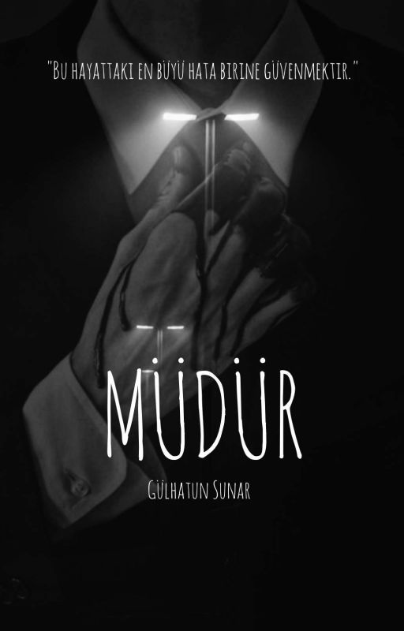
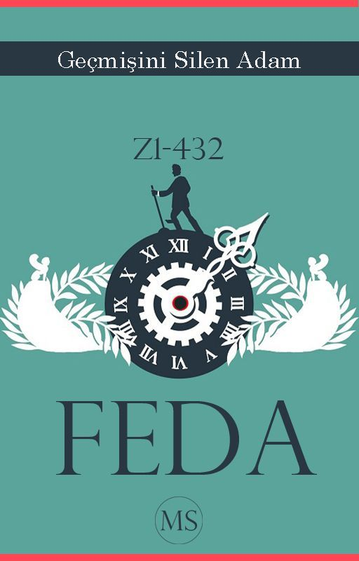
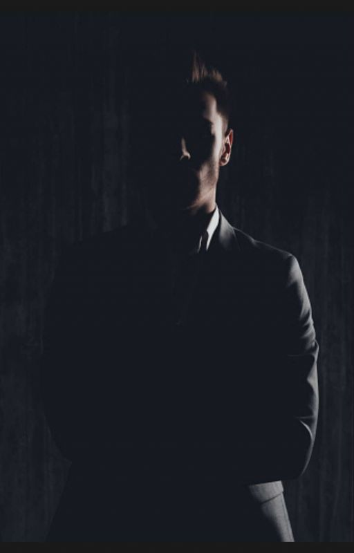
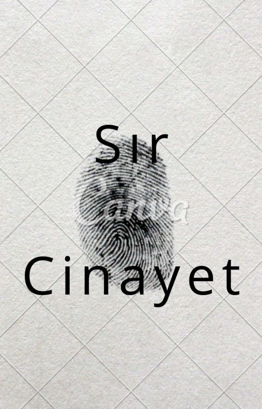

-

Müdür
Eğlenceli bir okul rutini. Güzel anılar, güzel zamanlar... Tabi bir o kadar da Olaylar karışıktı. Olaylar tam olarak okul müdür'ün den başlıyordu...
-

Feda
Yıl 3903, Dünya savaşları sonucu su ve ağaçlar tükenmiş durumda, geriye sadece umut adı verilen devasa bir ağaç kalmıştır. Z1-432 Adında bir mucit ve başkan adayı dünyayı kurtarmak için geçmişe gitmeye karar verir.
-

Karanlığın Kralı
Genç, mutlu ve renkli bir kişiliği olan mari gece bir kabus görür, kabusunda boş bir karanlığın içinde yankılanan ses ile kan ter içinde uyanır, o geceden sonra hayatı anlamdırılamaz bir hal alır , mari karanlıktan ölesiye korkar ama bu korkunun içinde onu bekleyen biri var onu karanlığa çeken biri ....
-

Sır Cinayet
O gün yine arkadaşımla balık tutmaya göle gitmiştik. Arkadaşım Fatih'e dedim ki: fatih çok açılmayalım fatih ise ; ya Mehmet bişey olmaz alttarafi balık tutacağız ne olabilir ki ... Fatih olta takımını çıkarttı ve oltanın ucuna tavuk göğüsü' nü taktı ve göle attı.Şansımız o zamana kadar yağ er gitmişti ki ne olduysa o zaman olmuştu , göldeki akıntıyla gölde bir ceset...